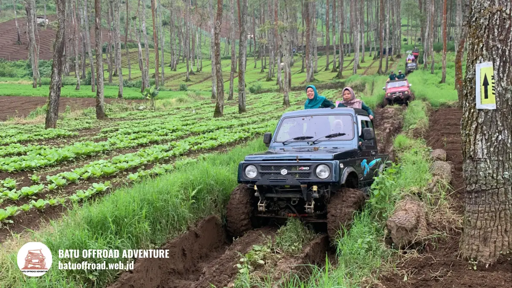

Paket Wisata Offroad Batu Pilih yang Cocok untuk Rombongan
Paket wisata offroad Batu untuk keluarga umumnya adalah paket jalur ringan dengan jeep berpemandu, titik singgah santai, dan durasi yang tidak terlalu panjang di sekitar Coban Talun. Isi, durasi, dan batas usia anak berbeda antaroperator, jadi konfirmasikan sebelum memesan.
Poin Penting Paket Wisata
- Paket wisata offroad Batu umumnya berisi jeep, pemandu, dan titik singgah, dengan tambahan yang berbeda antaroperator.
- Paket keluarga biasanya memilih jalur ringan, sedangkan rombongan aktif bisa memilih paket lebih panjang atau kombinasi aktivitas.
- Bandingkan paket dari isi, durasi, kapasitas, biaya tambahan, dan kebijakan jadwal ulang.
- Booking lebih awal sangat disarankan untuk akhir pekan dan libur panjang.
- Semua angka harga dan durasi wajib dikonfirmasi langsung ke operator.
Apa Itu Paket Wisata Offroad Batu?
Paket wisata offroad Batu adalah layanan wisata terpadu yang menggabungkan jeep offroad, pemandu, dan rute di kawasan pegunungan Kota Batu dalam satu harga yang telah ditentukan operator.
Kota Batu di Jawa Timur dikenal sebagai kota wisata dataran tinggi. Kawasan sekitar Coban Talun sering menjadi lokasi petualangan jeep karena jalurnya berkontur dan pemandangannya terbuka.
Operator menyusun paket agar wisatawan tidak perlu mengatur kendaraan, rute, dan pendamping secara terpisah.
Permintaan wisata di kota ini tinggi. Pemkot Batu mencatat 778.235 wisatawan selama libur Lebaran 2025, naik dari 564.622 pada periode yang sama tahun 2024 (ANTARA, April 2025).
Untuk keseluruhan 2024, paparan kinerja Pemkot Batu menyebut kunjungan wisata sebesar 10.737.865 wisatawan domestik dan mancanegara.
Angka ini menunjukkan bahwa slot paket wisata dapat cepat terisi pada masa ramai.
Siapa yang cocok memakai paket wisata offroad?
Paket wisata offroad Batu cocok untuk keluarga, pasangan, komunitas, dan rombongan kantor yang ingin petualangan ringan tanpa repot mengatur logistik.
Peserta dengan kondisi kesehatan tertentu, seperti masalah punggung, leher, atau kehamilan, sebaiknya berkonsultasi dengan dokter sebelum ikut.
Informasi ini bersifat umum dan bukan saran medis. Batas usia anak berbeda antaroperator, sehingga perlu ditanyakan sebelum memesan.
Apa Saja Pilihan Paket Wisata Offroad yang Tersedia?
Pilihan paket wisata offroad di Batu umumnya mencakup paket jalur ringan, paket standar dengan beberapa titik singgah, paket panjang, dan paket kombinasi aktivitas lain.
Tiap operator menamai paket dengan cara berbeda. Karena itu, perhatikan isi paket, bukan sekadar namanya. Berikut gambaran umum yang sering ditemui:
- Paket jalur ringan. Cocok untuk keluarga dan pemula. Jalur lebih santai dengan titik singgah terbatas.
- Paket standar. Menawarkan beberapa titik singgah dan waktu berfoto yang cukup.
- Paket panjang. Rute lebih jauh dengan waktu lebih lama bagi peserta yang ingin pengalaman penuh.
- Paket kombinasi. Menggabungkan jeep dengan aktivitas lain, misalnya paintball, bila operator menyediakannya.
- Paket rombongan. Dirancang untuk banyak jeep sekaligus, dengan koordinasi jadwal dan titik kumpul.
Tidak semua operator menyediakan semua jenis paket. Tanyakan langsung paket apa yang tersedia pada tanggal yang Anda inginkan.
Paket apa yang cocok untuk keluarga?
Paket yang cocok untuk keluarga adalah paket jalur ringan dengan jeep berpemandu, waktu istirahat cukup, dan kebijakan usia anak yang jelas di Kota Batu.
Keluarga dengan anak kecil biasanya lebih nyaman dengan durasi tidak terlalu panjang dan jeep yang memberi perlindungan dari debu atau hujan.
Tanyakan apakah operator menyediakan pegangan atau sabuk pengaman, serta apakah ada batas usia minimal.
Bagaimana Perbandingan Paket Wisata Offroad Batu?
Perbandingan paket wisata offroad Batu sebaiknya dilakukan dengan parameter sama, yaitu isi paket, durasi, kapasitas jeep, titik singgah, biaya tambahan, dan fleksibilitas jadwal.
Membandingkan harga saja bisa menyesatkan. Paket murah mungkin tidak termasuk tiket atau dokumentasi. Paket mahal mungkin sudah mencakup layanan yang paket lain bebankan terpisah.
Perbandingan umum tipe paket:
| Tipe Paket | Cocok Untuk | Karakter | Hal yang Perlu Dicek |
|---|---|---|---|
| Jalur ringan | Keluarga, pemula | Santai, singkat | Batas usia anak |
| Standar | Pasangan, teman | Seimbang | Jumlah titik singgah |
| Panjang | Peserta aktif | Lebih lama, lebih banyak titik | Durasi dan stamina |
| Kombinasi | Komunitas, kantor | Aktivitas ganda | Ketersediaan dan jadwal |
| Rombongan | Grup besar | Banyak jeep | Kapasitas dan koordinasi |
Setiap pilihan punya batasan. Paket ringan mungkin terasa kurang menantang bagi peserta yang mengincar sensasi. Paket panjang dapat melelahkan bagi peserta yang kurang bugar. Pilih berdasarkan siapa yang ikut, bukan hanya berdasarkan harga.

Jeep offroad melintasi jalur berlumpur di area perkebunan kawasan Coban Talun yang menjadi bagian dari rute paket wisata.
Bagaimana Cara Memilih Paket Sesuai Tujuan?
Cara memilih paket wisata offroad Batu adalah menentukan tujuan acara lebih dulu, lalu mencocokkan jenis paket, durasi, dan kapasitas dengan jumlah serta karakter peserta.
Gunakan langkah berikut:
- Tentukan tujuan. Liburan keluarga, gathering kantor, atau acara komunitas memiliki kebutuhan berbeda.
- Hitung peserta. Jumlah dan usia peserta menentukan jenis dan banyaknya jeep.
- Tentukan anggaran. Pastikan harga mencakup komponen yang Anda butuhkan.
- Cek durasi. Sesuaikan dengan agenda lain pada hari yang sama.
- Periksa kebijakan. Tanyakan jadwal ulang saat cuaca buruk.
Untuk keluarga, prioritaskan kenyamanan dan keselamatan. Untuk kantor, prioritaskan koordinasi dan kemudahan pembayaran. Untuk komunitas yang suka tantangan, pertimbangkan paket lebih panjang atau kombinasi aktivitas.
Pilih juga operator yang transparan. Operator yang baik menjelaskan isi paket, kapasitas, dan prosedur keselamatan tanpa menghindar.
Bagaimana Cara Booking Paket Wisata Offroad di Batu?
Cara booking paket wisata offroad di Batu adalah menghubungi operator, memilih paket, menentukan tanggal dan jumlah peserta, lalu mengonfirmasi rincian sebelum membayar.
Langkah praktis:
- Tentukan tanggal alternatif dan jumlah peserta.
- Hubungi operator melalui kontak resmi.
- Tanyakan isi paket, durasi, kapasitas, dan biaya tambahan.
- Minta konfirmasi tertulis.
- Bayar sesuai ketentuan operator dan simpan bukti.
- Tanyakan kebijakan jika cuaca buruk.
Berapa lama sebelumnya harus booking?
Waktu booking ideal bergantung pada musim dan ketersediaan jeep, tetapi untuk akhir pekan dan libur panjang di Kota Batu sebaiknya memesan jauh hari.
Tidak ada angka tunggal yang berlaku untuk semua operator. Konfirmasikan batas pemesanan dan ketersediaan slot langsung kepada operator. Pada masa ramai, seperti libur Lebaran yang mencatat 778.235 wisatawan pada 2025, jam keberangkatan favorit bisa cepat penuh.
Apa Kesalahan Umum Saat Memilih Paket Wisata Offroad?
Kesalahan umum saat memilih paket wisata offroad adalah hanya membandingkan harga, tidak membaca isi paket, dan memesan terlalu mepet dengan tanggal keberangkatan.
Kesalahan lain yang sering terjadi:
- Tidak menanyakan biaya tambahan seperti tiket atau dokumentasi.
- Memilih paket tanpa memperhitungkan usia peserta.
- Tidak menanyakan kebijakan cuaca.
- Memilih operator tanpa memeriksa identitas usaha.
- Tidak membagi rombongan sesuai kapasitas jeep.
Hindari semuanya dengan bertanya sebelum membayar dan meminta rincian tertulis.
Kesimpulan
Paket wisata offroad Batu terbaik adalah yang sesuai dengan peserta, tujuan, dan anggaran Anda. Bandingkan isi paket, kapasitas, biaya tambahan, dan kebijakan jadwal sebelum memutuskan.
FAQ
-
Paket apa yang cocok untuk keluarga?
Paket jalur ringan dengan jeep berpemandu biasanya cocok untuk keluarga. Tanyakan batas usia anak, ketersediaan pegangan atau sabuk pengaman, dan durasi sebelum memesan. -
Apakah ada paket kombinasi dengan paintball?
Beberapa operator menawarkan kombinasi aktivitas seperti paintball, tetapi tidak semuanya. Tanyakan ketersediaan, jadwal, dan harga langsung ke operator. -
Berapa lama sebelumnya harus booking?
Untuk akhir pekan dan libur panjang, pesan jauh hari. Batas waktu pasti berbeda tiap operator, sehingga konfirmasikan ketersediaan slot secara langsung.
Artikel Terkait